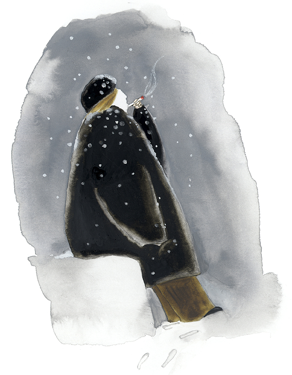

| Mon | Tue | Wed | Thu | Fri | Sat | Sun |
|---|---|---|---|---|---|---|
| 1 | 2 | 3 | 4 | 5 | ||
| 6 | 7 | 8 | 9 | 10 | 11 | 12 |
| 13 | 14 | 15 | 16 | 17 | 18 | 19 |
| 20 | 21 | 22 | 23 | 24 | 25 | 26 |
| 27 | 28 | 29 | 30 | 31 | ||
By Quinn Hargitai
15 September 2016
"There were refugee camps set up for the Kosovars all over the country. Albanian families would go to a camp, find a family and then take them home. These weren't relatives or friends, they were strangers, but the Albanians would take them in, feed them, clothe them, treat them as if they were part of the family." Nursing a macchiato in a small cafe in Berat, Albania's famed city of 1,001 windows, I listened as Nevila Muka remembered the effects the Kosovo War had on her home country. In order to escape the death and devastation brought by Serbian military forces in the 1990s, more than 500,000 refugees, mostly ethnic Albanians, fled from Kosovo to seek sanctuary in Albania over the course of just two years. I quickly learned that Muka hadn't just observed the mass exodus from a distance. Albania has generosity in its blood (Credit: Credit: Christian Kober 1/Alamy) Albania has generosity in its blood (Credit: Christian Kober 1/Alamy) "My grandmother actually took in a family. I was young, so I remember playing with their kids a lot. I remember they were really good bakers, they made the best bread I've ever tasted." It's the Albanian way. It's besa. "Didn't that ever get difficult?" I asked. "Not really for us, we were okay. But for many families it was a struggle, a lot of them didn't have the money to support the Kosovars. Many people went into debt doing it, but they would never turn anyone away."
 When I asked her why, she shrugged. "It's the Albanian way. It's besa." Albania has offered refugees a safe haven over the years (Credit: Credit: Brian Atkinson/Alamy) Albania has offered refugees a safe haven over the years (Credit: Brian Atkinson/Alamy) I had heard the word besa before, and knew that it meant something akin to belief, trust or faith, but I hadn't heard it in this context before. Muka explained that it's like a code for Albanians, one that dictates their generous hospitality. If someone comes to you looking for help, you give them a place to stay. It's that simple. After our discussion, I was fascinated by the concept of besa and wanted to learn more, so I contacted Orgest Beqiri, an Albanian university student and history buff I had met during my time in the country. I knew that if anyone knew more detail about besa, it would be him. When we met, he explained that the tradition has been passed down for centuries as part of the Kanun of Lekë Dukagjini, a set of customary laws created in the 15th Century to govern the tribes of northern Albania. Though the Kanun is often considered to be the original source of besa, many argue that the tradition is in fact even older and that the Kanun merely put words to the tribal traditions that had existed long before. Travellers could knock on a door and ask for refuge (Credit: Credit: Peter Eastland/Alamy) Travellers could knock on a door and ask for refuge (Credit: Peter Eastland/Alamy) "There's an old proverb written in the Kanun," he said. "‘Shpija para se me qenë e Shqiptarit, asht e Zotit dhe e mikut', which means ‘Before the house belongs to the owner, it first belongs to God and the guest.' It's a strong tradition, and in the older times, if you were a traveller or seeking refuge, you could knock on the door of the first house you found and ask ‘Head of the house, do you want guests?' and the owner would have to take you in. The Kanun says that the master of the house should always have a spare bed ready at any time of day or night, in case a guest arrives unexpectedly." "So it was a duty, then?" I asked him. "Even if you didn't want to host someone, you were bound by besa to do it?" "Not exactly. Yes it's a duty, but honestly most Albanians really enjoy hosting guests. It's a point of pride for them. In fact, there's an old story about a town in the north somewhere that rebelled when a hotel was going to be built there. All the people went to the town hall and complained, saying people who needed a place to stay could just come and knock on their doors." The master of the house should always have a spare bed (Credit: Credit: Henry Wismayer/Alamy) The master of the house should always have a spare bed (Credit: Henry Wismayer/Alamy) Although some of the more rigid aspects of besa have lost their hold over the passing of time, this general sense of duty and hospitality has endured in the Albanian people. Even though the Kosovo War was certainly the largest crisis that the country has ever had to deal with, it was neither the first nor the last. "There were refugee camps set up for the Kosovars all over the country. Albanian families would go to a camp, find a family and then take them home. These weren't relatives or friends, they were strangers, but the Albanians would take them in, feed them, clothe them, treat them as if they were part of the family." Nursing a macchiato in a small cafe in Berat, Albania's famed city of 1,001 windows, I listened as Nevila Muka remembered the effects the Kosovo War had on her home country. In order to escape the death and devastation brought by Serbian military forces in the 1990s, more than 500,000 refugees, mostly ethnic Albanians, fled from Kosovo to seek sanctuary in Albania over the course of just two years. I quickly learned that Muka hadn't just observed the mass exodus from a distance. Albania has generosity in its blood (Credit: Credit: Christian Kober 1/Alamy) Albania has generosity in its blood (Credit: Christian Kober 1/Alamy) "My grandmother actually took in a family. I was young, so I remember playing with their kids a lot. I remember they were really good bakers, they made the best bread I've ever tasted."It's the Albanian way. It's besa. "Didn't that ever get difficult?" I asked. "Not really for us, we were okay. But for many families it was a struggle, a lot of them didn't have the money to support the Kosovars. Many people went into debt doing it, but they would never turn anyone away." When I asked her why, she shrugged. "It's the Albanian way. It's besa." Albania has offered refugees a safe haven over the years (Credit: Credit: Brian Atkinson/Alamy) Albania has offered refugees a safe haven over the years (Credit: Brian Atkinson/Alamy) I had heard the word besa before, and knew that it meant something akin to belief, trust or faith, but I hadn't heard it in this context before. Muka explained that it's like a code for Albanians, one that dictates their generous hospitality. If someone comes to you looking for help, you give them a place to stay. It's that simple. After our discussion, I was fascinated by the concept of besa and wanted to learn more, so I contacted Orgest Beqiri, an Albanian university student and history buff I had met during my time in the country. I knew that if anyone knew more detail about besa, it would be him. When we met, he explained that the tradition has been passed down for centuries as part of the Kanun of Lekë Dukagjini, a set of customary laws created in the 15th Century to govern the tribes of northern Albania. Though the Kanun is often considered to be the original source of besa, many argue that the tradition is in fact even older and that the Kanun merely put words to the tribal traditions that had existed long before. Travellers could knock on a door and ask for refuge (Credit: Credit: Peter Eastland/Alamy) Travellers could knock on a door and ask for refuge (Credit: Peter Eastland/Alamy)
"There's an old proverb written in the Kanun," he said. "‘Shpija para se me qenë e Shqiptarit, asht e Zotit dhe e mikut', which means ‘Before the house belongs to the owner, it first belongs to God and the guest.' It's a strong tradition, and in the older times, if you were a traveller or seeking refuge, you could knock on the door of the first house you found and ask ‘Head of the house, do you want guests?' and the owner would have to take you in. The Kanun says that the master of the house should always have a spare bed ready at any time of day or night, in case a guest arrives unexpectedly." "So it was a duty, then?" I asked him. "Even if you didn't want to host someone, you were bound by besa to do it?" "Not exactly. Yes it's a duty, but honestly most Albanians really enjoy hosting guests. It's a point of pride for them. In fact, there's an old story about a town in the north somewhere that rebelled when a hotel was going to be built there. All the people went to the town hall and complained, saying people who needed a place to stay could just come and knock on their doors." The master of the house should always have a spare bed (Credit: Credit: Henry Wismayer/Alamy) The master of the house should always have a spare bed (Credit: Henry Wismayer/Alamy)